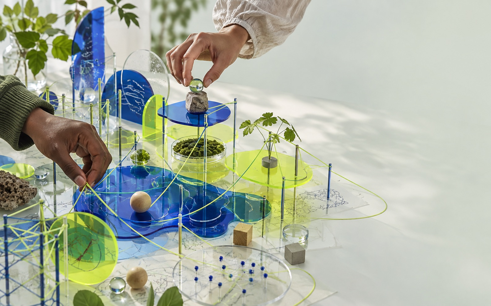

Name the outcome.
Be clear about what a system is meant to help with before judging whether it works.

Use a simple lens to see how human goals, systems and consequences move together.
Choose a lensBrowse Singapore's Intelligence Navigator ↗Read Field Note 01 · Singapore AI ecosystem ↗Browse the Field Notes archive ↗Select a context. The questions change because the people, goals and consequences change too.
Where might an intelligent system shape a decision?
Recommendations can save time. They also define what counts as progress, and who can choose another route.
This is an illustrative learning tool. It does not evaluate a real system.
Be clear about what a system is meant to help with before judging whether it works.
Notice everyone affected by a decision, including people who never touch the system.
Make review, refusal and correction possible when the stakes are real.